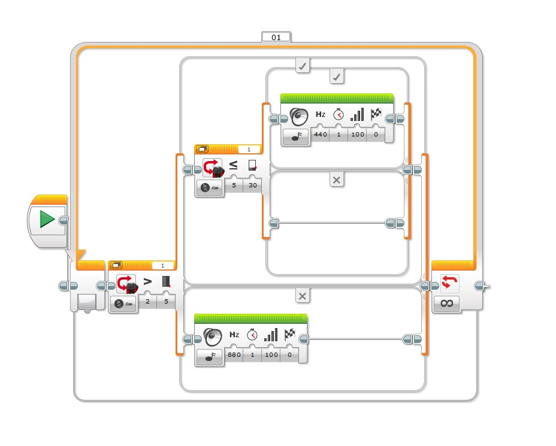
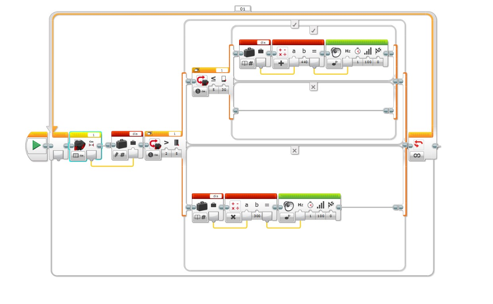

本單元比較二種不同視覺化設計範例：原始固定頻率警報（圖 1 2swtcih.jpg）與引進變數與算數運算之動態調頻實作（圖 2 cm2hz.jpg）。


dis 變數、Math Block 算數運算與音效頻率資料線。
Cm）讀取距離數值，透過資料傳輸線注入紅色變數積木（Variable 寫入模式 #），變數名稱命名為 dis。dis，經由 Math 積木（乘法模式 $\times$）與常數 $300$ 相乘，公式為：
$$\text{Frequency} = \text{dis} \times 300$$
Hz）輸入接腳。dis，經由 Math 積木（加法模式 $+$）與常數 $440$ 相加，公式為：
$$\text{Frequency} = \text{dis} + 440$$
Hz）接腳。cm2hz.jpg 的算術公式中：
為符合倒車雷達與防撞警報的人因工程設計，我們必須建立距離 $d$ 與音頻 $f$ 的負斜率 / 反比映射關係。
設定目標距離範圍 $[d_{\text{min}}, d_{\text{max}}]$ 對應至頻率範圍 $[f_{\text{high}}, f_{\text{low}}]$。一般通用數學公式為：
$$\text{Frequency}(d) = f_{\text{high}} - \left( \frac{f_{\text{high}} - f_{\text{low}}}{d_{\text{max}} - d_{\text{min}}} \right) \cdot (d - d_{\text{min}})$$968 - (17.6 * a)，其中 a 輸入端連接變數 dis。Hz 埠。若希望在極近距離時頻率呈指數級攀升（呈現極度急促感），可採用雙曲倒數函數：
$$\text{Frequency}(d) = \frac{K}{d} + f_{\text{base}}$$FUNCTION Main():
sensor_port = 1
WHILE True: # Infinite Loop 01
# 1. 讀取距離並存入變數 dis
dis = ReadDistanceSensor(port=sensor_port)
IF dis > 5:
IF dis <= 30:
# 2. 5cm < dis <= 30cm: 負斜率線性反比演算法
# 距離越小(靠近5cm)，發出頻率越高(靠近880Hz)
calc_freq = 968 - (17.6 * dis)
# 限制頻率安全邊界 (Pitch Clamping)
calc_freq = Clamp(calc_freq, min_val=440, max_val=880)
PlayTone(frequency=calc_freq, duration=0.2, volume=100, wait=TRUE)
ELSE:
# dis > 30cm: 安全區靜音
Pass
ELSE:
# 3. dis <= 5cm: 倒數指數加速警報演算法
# 距離越短(1~5cm)，頻率衝高至 700Hz ~ 2300Hz
calc_freq = (2000 / MAX(dis, 1)) + 300
calc_freq = Clamp(calc_freq, min_val=700, max_val=2300)
PlayTone(frequency=calc_freq, duration=0.1, volume=100, wait=TRUE)
END WHILE
END FUNCTIONClamp(freq, 250, 2500) 將極限值鎖定於舒適安全的聽覺範圍。
1 秒。當使用連續動態調頻時，發聲時間應縮短為 0.1 秒 ~ 0.2 秒，才能讓駕駛或使用者在移動過程中即時感受到頻率的滑順調變換（Pitch Modulation）。
🔹 [2026-09-14 15:49:34] [Antigravity / Gemini 3.6 Flash] 變更紀錄
增加匯出成pdf的按鈕window.print() 原生列印導出視窗，並添加專屬 @media print 樣式（自動隱藏按鈕、防止跨頁截斷、優化列印配色）。🔹 [2026-09-14 15:46:22] [Antigravity / Gemini 3.6 Flash] 變更紀錄
latex的語法沒有完全呈現🔹 [2026-09-14 15:45:11] [Antigravity / Gemini 3.6 Flash] 變更紀錄
C:\Users\User\Desktop\cm2hz.jpg 加入這個實作程式的討論，提出距離越短音頻越高的算法，整理成筆記cm2hz.jpg，剖析正比盲點並推導負斜率與雙曲倒數對映演算法。🔹 [2026-09-14 15:25:15] [Antigravity / Gemini 3.6 Flash] 變更紀錄
將原圖型加入網頁內容 做成筆記2swtcih.jpg 至筆記內。